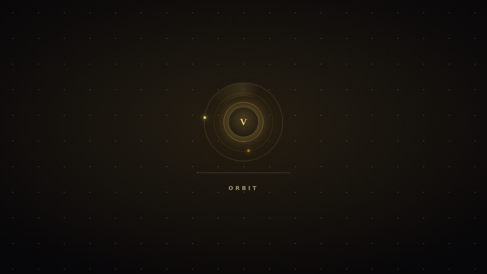
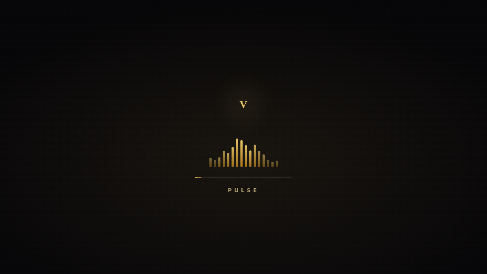

部署：bash install-ves.sh --container emby --features 1 --lstyle orbit
bash install-ves.sh --container emby --features 1 --lstyle orbit


另有 6 套历史样式：默认极简进度 · aurora 极光 · cinema 影院 · split 分屏 · minimal 三点 · logo 纯LOGO 全屏预览：加载页画廊